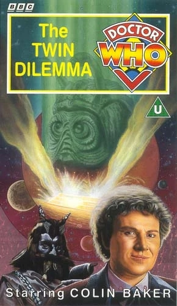
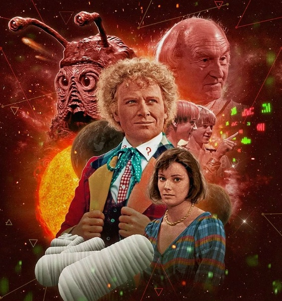
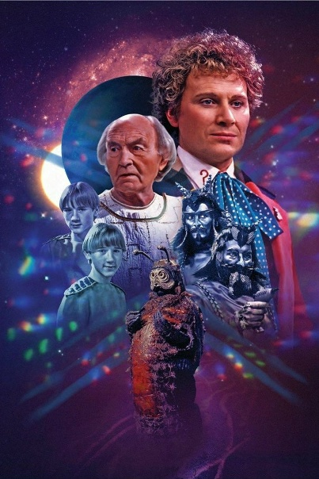
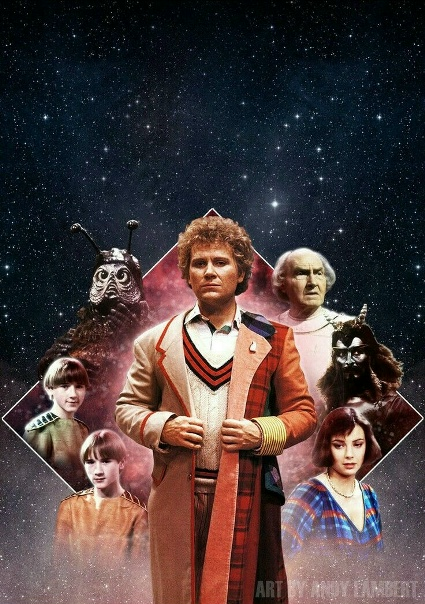
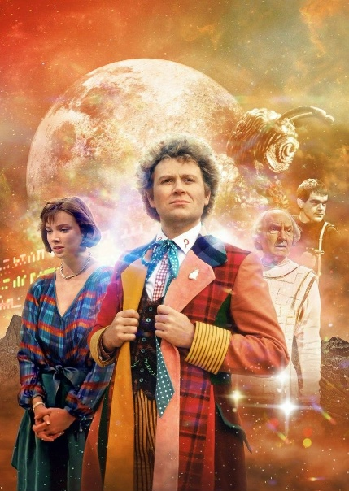

Эра Шестого Доктора (21 сезон)
<<< НАЗАД ||| 7. Двойная дилемма ||| ДАЛЬШЕ >>>
MVO Huracan Team (2023 и 2026), MVO RedDiamond Studio или Original [ENG] Субтитры: Русские {Ольга Олексеева} и Английские |  |
|---|---|
с фанатской локализацией видеоряда (HuracanTeam) MVO Huracan Team (2023 и 2026), MVO RedDiamond Studio или Original [ENG] Субтитры: Русские {Ольга Олексеева} и Английские | |
The Twin Dilemma
Дата выхода: 22-30 марта 1984
Формат: 4 эпизода по 25 мин.
 |
Сразу после регенерации Шестой Доктор не в себе — нестабилен, агрессивен, подозрителен. Он тащит Пери на планету Тита, где двоих гениальных близнецов-математиков похитили, чтобы они вычислили, как перемещать планеты по воле таинственного тирана.
Считается одной из худших серий за всю историю сериала — и это при том, что она должна была представить нового Доктора. Шестой в буйстве пытается задушить Пери, и многим зрителям этого хватило, чтобы разлюбить героя. А продюсер Джон Натан-Тёрнер настоял, чтобы серия вышла сразу за «Пещерами Андрозани» в том же сезоне — чтобы зрители увидели нового Доктора без перерыва между сезонами.
 VHS - май 1992 |  DVD - 7 сентября 2009 |  Blu-ray - 16 марта 2026 * Версия в нашей группе |
|---|










Трейлер: